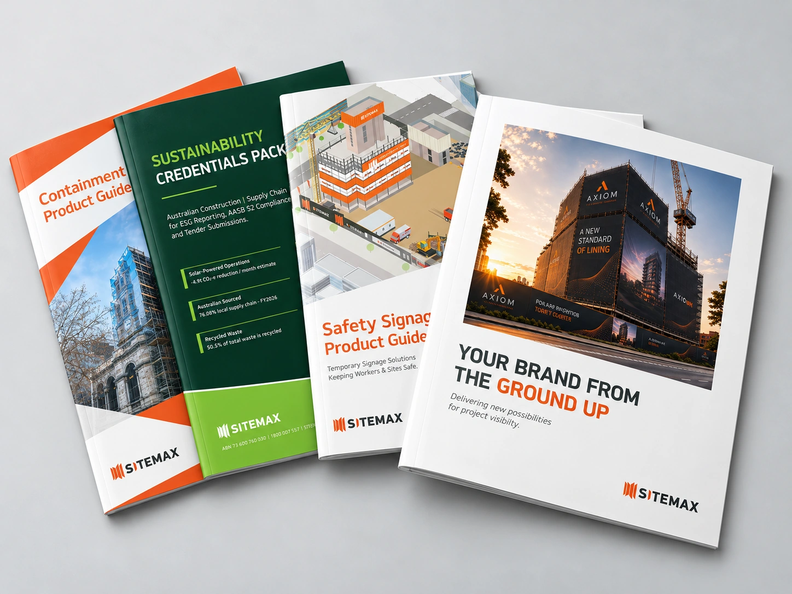
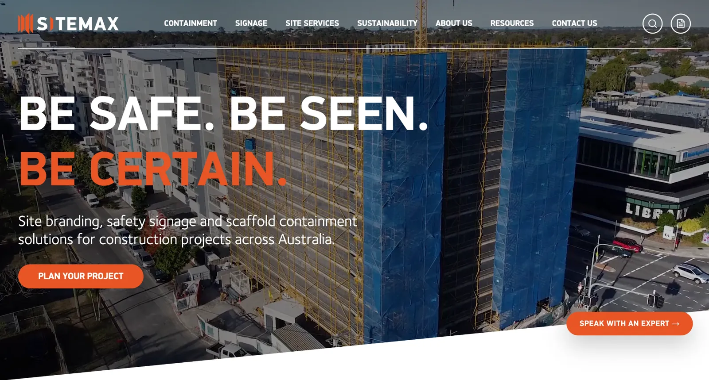
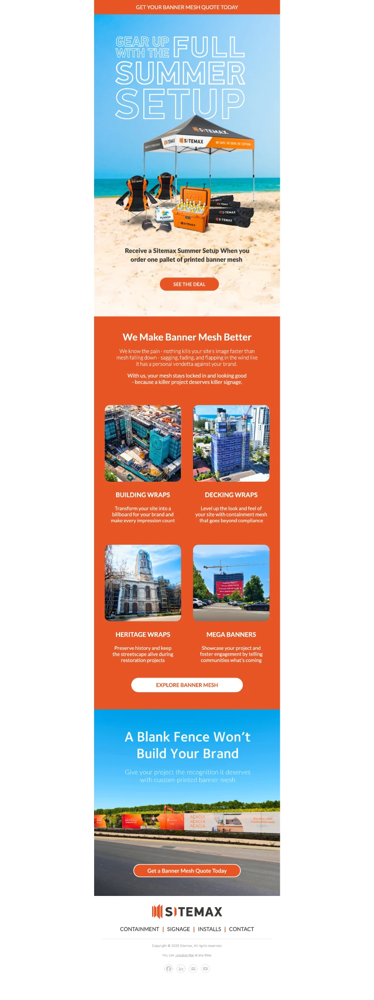

Turning technical
into valuable.
Making complex construction products easier to understand and choose.

Start with the problem.
I develop product positioning, sales resources and campaigns for technical construction products, including scaffold containment and signage solutions.
The opportunity
Technical specifications and compliance data are essential, but customers also need to understand practical applications and what sets one solution apart.
My contribution
Translated product testing, specifications and application scenarios into clear customer messaging; developed product guides, presentations, marketing campaigns and exhibition materials.
Created consistent, customer-focused product communications and sales resources. Quantified commercial results have not been added.
The thinking, and the work behind it.
Three areas of work, from turning technical information into useful resources to creating digital experiences and campaign communications. Explore the examples and the thinking behind them.
Product positioning · Content · PrintProduct guidesExplore the work
Objective. Make detailed product information easier for customers and sales teams to understand and use.
My contribution. Developed the guides through product research, copywriting, graphic creation, layout and print-ready production, translating technical specifications into practical applications and customer benefits.
Value. A consistent library of technical and product resources that customers can access when evaluating Sitemax solutions.
Explore Sitemax product guides ↗
Website strategy · UX · ConversionDigital experiencesExplore the work
Objective. Make complex products and services easy to explore, understand and enquire about online.
My contribution. Developed audience-led page structure, positioning, copy and creative direction, connecting service information and proof points to relevant calls to action.
Value. More purposeful website journeys that make it easier for construction and property development customers to assess the offering and take the next step.

Email · Editorial · SocialCampaign communicationsExplore the work
Objective. Build awareness, communicate product value and create reasons for customers to engage with Sitemax.
My contribution. Developed campaign concepts, copy and creative direction across promotional EDMs, industry education, website articles and social communications.
Value. Connected campaigns and content that bring commercial messages to life across customer touchpoints.
Want to know more?
I'm happy to talk through the thinking, challenges and collaboration behind this work. Let's talk